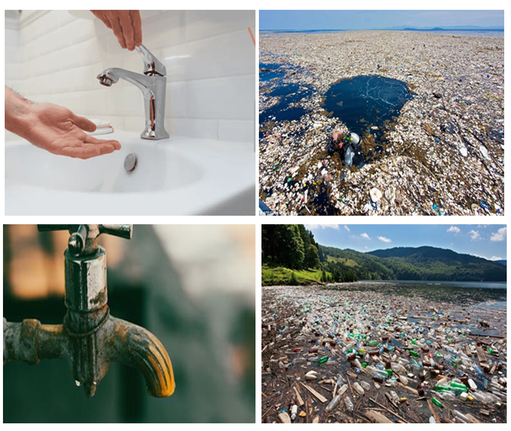

QUARTER 3 - MODULE 3
WATER CONSERVATION IN BIOLOGY
Grade: 9
Quarter 3 - Module 3 (Water Conservation in Biology)
Hello, Grade 9 Learners! Welcome to this exciting and eye-opening lesson on “Water Conservation”. Before we dive in, take a moment to explore what meaningful learning experiences await you in this module. Let’s protect the planet one drop at a time!
WHAT I NEED TO KNOW
Learning Competency:
Use information from secondary sources to describe the possible effects
of human activities, such as deforestation, pollution, and introduction of
invasive species, on living things in an ecosystem.
Have you ever wondered where the clean water comes from or what would happen if we ran out of it when you turned on a faucet? The health of our ecosystems and the availability and safety of our water can be significantly impacted by human activities such as forest destruction, river pollution, and the introduction of non-native plants and animals. Every drop we use is a part of a much larger tale.
In this module, we'll look at how human actions, whether positive or negative, affect the water and life. To grasp the big picture, you will have the opportunity to examine accurate information from reliable sources.
A. List the various human activities that have a negative effect on
ecosystems and water quality.
B. Explain the effects that pollution, deforestation, and the introduction of
invasive species have on water and living things.
C. Describe the importance of conserving water for preserving the
equilibrium of ecosystems.
D. Make suggestions for methods to preserve the environment and help
conserve water.
Before we begin, let’s find out what you already know!
WHAT I KNOW
Pre-Assessment!
Direction: Answer the following multiple-choice questions to test your prior knowledge. Choose only the letter of the correct answer. Write your answer on a separate sheet of paper.
- Why is water conservation important for maintaining healthy
ecosystems?
A. Water helps animals grow faster
B. Water is essential for photosynthesis and sustaining plant life
C. Water decreases the temperature of the environment
D. Water increases the number of invasive species - How can pollution affect the availability of clean water in ecosystems?
A. Pollution increases the water supply in ecosystems
B. Pollution can contaminate water, making it unsafe for animals and plants
C. Pollution promotes the growth of beneficial plants
D. Pollution has no effect on water quality in ecosystems - What impact can deforestation have on the water cycle in an ecosystem?
A. Deforestation increases rainfall and water availability
B. Deforestation reduces the amount of water that returns to the atmosphere
C. Deforestation has no effect on water cycles
D. Deforestation increases water retention in soil - How does the introduction of invasive species affect water conservation
in an ecosystem?
A. Invasive species can reduce competition for water resources
B. Invasive species often consume large amounts of water, stressing native plants and animals
C. Invasive species help conserve water by improving soil quality
D. Invasive species do not affect water availability in an ecosystem - Which of the following human activities could potentially harm water
conservation efforts in an ecosystem?
A. Planting more native plants
B. Reducing pollution and waste
C. Over-extraction of water for industrial purposes
D. Using water-efficient farming techniques
LESSON 1:
Water Conservation and Human Impact on Ecosystems
In this lesson, you’ll discover why water conservation matters and how protecting water helps the entire ecosystem stay healthy.
WHAT’S IN4 Pics 1 Word: Fill in the missing letters to reveal the hidden word.
___ ___ ___ ___ ___
| E | W | P | R | A |
|---|---|---|---|---|
| D | O | T | S | P |
Water is essential to maintaining all ecosystems on Earth. It is essential for maintaining the growth of plants, giving aquatic creatures permanent homes, and acting as a temporary residence or breeding ground for a variety of insects, amphibians, and other organisms that depend on water. The minerals and nutrients required to support life are also found in water. Water is the most important resource in nature and is essential to human survival.
WHAT’S NEWImagine turning on your faucet and nothing comes out. Imagine a river once full of fish, now filled with plastic. Scary, right? Sadly, these things are already happening in many places around the world.
This lesson introduces you to the idea of water conservation, why it’s important, how water is being wasted or polluted, and how you can help protect it.
WHAT IS ITWater conservation is vital in addressing the challenges of water scarcity. By conserving water, we help alleviate pressure on freshwater resources, preserve ecological balance, and promote a sustainable future for generations to come. It also includes preventing pollution of water sources to ensure a greater supply of clean water for the global population.
1.1: Understanding Water Pollution
Water pollution, the release of substances into subsurface groundwater or into
lakes, streams, rivers, estuaries, and oceans to the point that the substances
interfere with beneficial use of the water or with the natural functioning of
ecosystems.
How can we PREVENT water pollution?
By 2025, half of the world’s population is expected to live in water-scarce
areas, making every drop of polluted water an irreparable loss for the future.
To address this, we must take preventive measures against water pollution,
including:
- Reduce CO2 emissions to prevent global warming and acidification of the oceans.
- Reduce the use of chemical pesticides and nutrients on crops.
- Reduce and safely treat waste water so that, as well as not polluting, it can be reused for irrigation and energy production.
- Restrict the use of single-use plastics that end up floating in rivers, lakes and oceans, many as microplastics.
- Encourage sustainable fishing to ensure the survival of species and avoid depletion of the seas.
1.2: Importance of Conserving Water
Why do we need to conserve water?
We need to conserve water because it is a valuable, limited, and vulnerable resource essential for life. Humans rely on water daily for drinking, cooking, hygiene, growing food, and producing energy. However, only a small fraction of Earth’s water is accessible freshwater, and this limited supply is at risk of contamination from pollutants like bacteria, viruses, and harmful chemicals, which can endanger both human health and aquatic ecosystems.
Here’s why conserving water is important in biology:- All living things need water to grow, reproduce, and survive.
- Water bodies like lakes, rivers, and oceans are home to many species.
- Water is limited! Only about 1% of Earth's water is usable freshwater.
- Clean water supports healthy ecosystems and keeps food chains balanced.
- Fixing leaks in pipes and faucets
- Taking shorter showers
- Washing dishes and clothes in cold water
- Watering plants only when necessary
- Using a dishwasher instead of hand washing dishes
When we pollute or waste water, we don’t just affect ourselves—we harm entire ecosystems.
WHAT’S MORE
Activity 1:
Think-Pair-Share (can be done in a journal)
Think: Why do you think water is called a “life-giving resource”?
Pair (or Self-Reflect): List 3 reasons water is important for people, animals,
and plants.
Share: If you could tell your community one message about saving water,
what would it be?
Activity 2:
Water Usage Tracker
Instructions: List how much water you use in a single day. Then, identify at least two ways you could reduce your water use. Copy the table below in a whole sheet of paper.
Example| ACTIVITY | TIMES PER DAY | HOW COULD YOU SAVE WATER HERE? |
|---|---|---|
| Brushing teeth | 3 times a day | Turn off tap while brushing |
Do this!
| ACTIVITY | TIMES PER DAY | HOW COULD YOU SAVE WATER HERE? |
|---|---|---|
Activity 3:
Poster Making (Individual Task)
Instructions: Design a poster in a one whole white cartolina encouraging your school or community to conserve water. Include facts, drawings, or slogans like:
“Every Drop Counts!” & “Save Water, Save Life!”
WHAT I HAVE LEARNED
Reflection Prompt:
Instruction: Write your reflection about what you have learned and how you can make a difference. Write it on a short bond paper.
“Why is it important to conserve water? How can you help?”
___________________________________________________________
___________________________________________________________
___________________________________________________________
___________________________________________________________
ASSESSMENT
Part 1: Multiple Choice
Direction: Choose only the letter of the best answer.
- What does "water conservation" mean?
A. Using as much water as you want
B. Using water carefully and protecting it
C. Throwing water in the trash
D. Saving water only during summer - Why is clean water important to ecosystems?
A. It helps trees grow faster
B. It prevents animals from sleeping
C. It supports life and helps organisms survive
D. It makes the Earth spin faster - Which activity can help conserve water at home?
A. Leaving the tap running while brushing teeth
B. Washing clothes every day with half-loads
C. Fixing leaking faucets and turning off unused taps
D. Watering plants during the hottest part of the day - List two ways you can help conserve water in your home or school.
Answer: _____________________________________________. - What can happen to plants and animals if water is polluted or wasted?
Answer: _____________________________________________.
Part 2: Short Answer
REFERENCES
Ahwadmin. (2024, April 30). No Water Coming Out Of Faucet | American Home Water & Air. American Home Water & Air.Brenner, L. (2022, August 30). Role of water in the ecosystem. Sciencing.
Causeartist. (2024, September 24). Water Conservation: Explained + benefits. Causeartist.
Iberdrola. (2021, April 22). WATER POLLUTION. Iberdrola.
Lewis, J. (2024, March 4). 10 Scientific solutions to plastic Pollution. Earth.Org.
Lui, B. (2019, May 5). How Do Plastics Enter our Oceans? rePurpose Global.
Moore, & Charles. (2025b, March 20). Plastic pollution | Definition, Sources, Effects, Solutions, & Facts. Encyclopedia Britannica.
Nathanson, & A, J. (2025b, March 29). Water pollution | Definition, Causes, Effects, Solutions, Examples, Types, & Facts. Encyclopedia Britannica.
Privatization is No Solution for Any Water Crisis | Demos. (2022, September 26). Demos.
Vipin. (2022, November 3). How can we conserve water - Importance and ways to conserve water. Infinity Learn by Sri Chaitanya.
4 pics 1 word level 81. (n.d.).
In Lesson 1, you learned how vital water is to life and why it’s important to
conserve it. You also explored how ecosystems rely on water to stay balanced
and healthy.
In this lesson, we’ll look more closely at how human activities like cutting
down forests, dumping waste, or introducing foreign species can damage
ecosystems and affect the quality and availability of water for all living things.
WHAT’S IN
Activity: Spot the Pollution – What’s Causing Water Pollution?
Instructions: Look at each picture carefully and Identify the human activity
happening in the image.
1.___________________________________________ 2.___________________________________________
3.___________________________________________ 4.___________________________________________
Human activities are one of the main causes of water pollution worldwide. Industrial waste, agricultural runoff, and improper waste disposal introduce harmful chemicals and toxins into water bodies. These activities not only pollute the water but also harm aquatic life and disrupt ecosystems.
WHAT’S NEW
Have you ever seen or heard about:
- A river filled with garbage?
- A forest area that’s now a construction site?
- Strange animals or plants suddenly appearing in new places?
These are signs of human impact. Actions such as pollution, deforestation, and
the introduction of invasive species can have serious effects on water and the
organisms that depend on it.
In this lesson, you’ll explore how those activities disrupt ecosystems
and what we can do to prevent or reverse them.
2.1: Human Activities that Affect Water and Ecosystem
Let’s break down three major human activities that affect water and ecosystems:
1. Deforestation
Deforestation refers to the clearing or thinning of forests by human activity and is one of the most significant global land use issues. Traditionally, deforestation is measured by the area of forest cleared for human purposes, such as harvesting trees for wood products or converting land for crops and grazing. In clear-cutting, all the trees are removed, leading to the complete destruction of the forest. In some cases, partial logging and accidental fires can also thin out trees, drastically altering the forest structure.
- When forests are cut down, the land becomes dry and erodes easily
- Trees help hold the soil and water in place. Without them, rainwater washes away soil, leading to muddy rivers and polluted water sources.
- Less forest cover also affects rainfall and water availability.
Example:
When a forest near a river is cleared for farming, soil from the bare land can run off into the river. This makes the water dirty and affects fish and other aquatic life.
2. Pollution
Water pollution is the release of harmful substances into groundwater, lakes, rivers, streams, estuaries, and oceans, to the point that it disrupts the natural functioning of ecosystems or interferes with the beneficial use of water. This includes the discharge of chemicals, trash, microorganisms, and even energy in the form of heat or radioactivity. These pollutants can degrade water quality, harm aquatic life, and impact human health and the environment.
- Factories, homes, and farms release waste into rivers, lakes, and oceans.
- Chemicals, plastics, and even human waste can poison water and harm or kill living organisms.
- Polluted water is unsafe for drinking, fishing, swimming, and even farming.
Example:
Oil spills in oceans can kill fish, birds, and other marine animals. Even household waste like soap and detergent can pollute rivers if not disposed of properly.
3. Introduction of Invasive Species
An invasive species is a plant, animal, or parasite that does not naturally belong to an ecosystem and often causes harm when introduced. Many invasive species enter new environments by accident, through activities like global trade or travel. The method by which an invasive species enters a new ecosystem is known as a pathway.
- Invasive species are animals or plants brought from other areas that don’t naturally belong in an ecosystem.
- They often spread quickly, use up resources, and outcompete native species.
- This can change how water and nutrients flow through the ecosystem.
Example:
The water hyacinth, a floating plant, can grow uncontrollably in lakes and rivers. It blocks sunlight and oxygen, suffocating fish and other plants.
2.2: Causes of Water Pollution
What are the causes of water pollution?
There are many causes of water pollution. Below, we will focus on seven of the major ways that water can become polluted.
1. Solid waste
Improper disposal of solid waste, including garbage, electronic waste, and construction debris, is a major contributor to water pollution, especially in developing countries with inadequate waste management systems. Plastics, in particular, pose a significant threat to aquatic ecosystems, as they break down into microplastics that are harmful to marine life and have been found in both marine organisms and drinking water. These pollutants can leach harmful chemicals, damage 18 ecosystems, and potentially enter the food chain, raising concerns about their long-term health effects.
2. Industrial Waste
Industries worldwide are major contributors to water pollution, often producing toxic chemicals and pollutants that can contaminate nearby freshwater systems if not properly managed. Improperly treated industrial waste from agricultural sites, mines, and manufacturing plants can enter rivers, streams, and eventually the ocean, making water unsafe for human use. Additionally, the toxic chemicals in industrial waste can alter water temperatures, creating harmful conditions for aquatic organisms.
3. Marine Dumping
Marine dumping refers to the practice of discarding garbage directly into the ocean, a method still used by some countries worldwide. Items like household waste can take anywhere from two to 200 years to decompose, contributing to long-lasting pollution. This practice harms marine ecosystems and poses significant environmental challenges.
4. Sewage and Wastewater
Even after treatment, sewage and wastewater can still contain harmful chemicals, bacteria, and pathogens. When this wastewater is released into the sea along with freshwater, it introduces disease-causing organisms that can lead to health issues in both humans and animals. These contaminants pose a significant threat to public health and marine life.
5. Oil Leaks and Spills
The phrase "like water and oil" illustrates how these two substances do not mix or dissolve. Similarly, oil spills and leaks, often resulting from offshore drilling or oil transport ships, are major contributors to water pollution. These accidents can have devastating effects on marine life and ecosystems.
6. Agriculture
To protect crops from bacteria and insects, farmers often use chemicals and pesticides. However, these substances can seep into groundwater, posing risks to animals, plants, and humans. When it rains, the chemicals mix with rainwater, flowing into rivers and streams, ultimately reaching the ocean and contributing to further water pollution.
7. Global Warming
Rising temperatures due to global warming are a significant concern for water pollution. As water temperatures increase, it can lead to the death of aquatic animals, disrupting ecosystems. Large die-offs of marine life can further pollute the water, worsening the overall water quality and amplifying the pollution problem.
Watch the Youtube video about the human activities that cause destruction of water bodies.
WHAT’S MOREActivity 1:
Case Study Review
Instructions: Read the short case below and answer the questions. Case: A large section of forest near the Pagatpat River was cleared for a new highway. A few months later, villagers noticed the river had become muddy and fish started dying.
Questions:- What human activity took place?
- What effect did it have on the river and its ecosystem?
- What could have been done to prevent the problem?
Activity 2:
Match and Explain
Instruction: Match each human activity to its correct effect and explain it in 1 sentence.
| Human Activity | Effect | |
|---|---|---|
| A. Deforestation | 1. Poisoning fish and aquatic plants | |
| B. Pollution | 2. Reducing native species populations | |
| C. Invasive Species | 3. Soil erosion and dirty water |
Your Answers:
A: ___
Explanation: ____________________________________________________________
B: ___
Explanation: ____________________________________________________________
C: ___
Explanation: ____________________________________________________________
Activity 3:
Quick Research Task
Instruction: Find an example of an invasive species in the Philippines (use your textbook or the internet). Write 3-5 sentences about how it affects water and the local ecosystem.
WHAT I HAVE LEARNED
Reflection Prompt:
Instruction: Choose one human activity: deforestation, pollution, or invasive species.
In one paragraph, explain how it affects water and living things in an ecosystem. Then, suggest one way people can reduce its negative impact. Write it on a whole sheet of bond paper.
___________________________________________________________________________________
___________________________________________________________________________________
___________________________________________________________________________________
___________________________________________________________________________________
Part 1: Multiple Choice
Direction: Choose only the letter of the correct answer.
- What happens to a river when the surrounding trees are cut down?
A. The water becomes clearer
B. Fish population increases
C. Soil erosion causes muddy water
D. The river becomes deeper - Which is an example of pollution?
A. Planting trees near rivers
B. Throwing trash in a lake
C. Protecting native fish
D. Cleaning up plastic waste - What is a possible effect of introducing invasive species into a
freshwater lake?
A. The water becomes more nutritious
B. Native species thrive
C. Balance in the ecosystem is disturbed
D. Ecosystem becomes more diverse - 4. Give one example of how human pollution can affect fish in a river.
Answer: _____________________________________________. - Suggest one way students like you can help prevent water pollution.
Answer: _____________________________________________.
Part 2: Short Answer
References
Admin-Risepoint. (2019, September 9). What are the Causes of Water Pollution? – ECU Online. ECU Online.
https://online.ecok.edu/articles/causes-of-water-pollution/Deforestation. (n.d.).
https://education.nationalgeographic.org/resource/deforestation/ET HealthWorld & www.ETHealthworld.com. (2016, December 19). Pay Rs 10,000 fine for throwing waste in public place: NGT. ETHealthworld.com.
https://health.economictimes.indiatimes.com/news/industry/pay-rs-10000-fine-for-throwing-waste-in-public-place-ngt/56065824Kate, & Kate. (2023, February 22). Why invasive species are a problem - Dynamic Earth lesson plans. Dynamic Earth Lesson Plans - Lesson Plans for Sustainable Science!
https://dynamicearthlearning.com/invasive-species/Marine pollution. (n.d.).
https://education.nationalgeographic.org/resource/marine-pollution/Nathanson, & A, J. (2025, March 29). Water pollution | Definition, Causes, Effects, Solutions, Examples, Types, & Facts. Encyclopedia Britannica.
https://www.britannica.com/science/water-pollutionOhlson, K. (2013, November 20). Making the best of invasive species. Smithsonian Magazine.
https://www.smithsonianmag.com/science-nature/making-the-best-of-invasive-species-179149405/Pester, P. (2025, January 10). Deforestation: Facts about the widespread destruction of Earth’s forests. livescience.com.
https://www.livescience.com/27692-deforestation.htmlPesticide exposure on Thai farms mapped by NIEHS-funded scientists (Environmental Factor, February 2022). (n.d.). National Institute of Environmental Health Sciences.
https://factor.niehs.nih.gov/2022/2/papers/pesticide-exposurePimm, & L, S. (2025, March 28). Deforestation | Definition, History, Consequences, & facts. Encyclopedia Britannica.
https://www.britannica.com/science/deforestationSexton, C. (2024, March 7). Invasive species introduction (Plants & animals). Earth.com.
https://www.earth.com/earthpedia-articles/invasive-species-plants-animals/Vehicle Maintenance tips to STOP leaks | Black Mountain, NC. (n.d.).
https://www.townofblackmountain.org/2733/Vehicle-Maintenance-tips-to-STOP-leakWaste deep. (2024, April 30). Union of Concerned Scientists.
https://www.ucs.org/resources/waste-deep